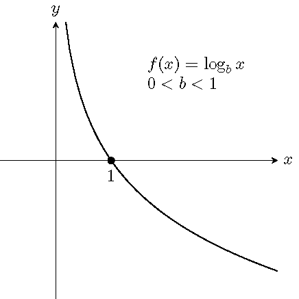
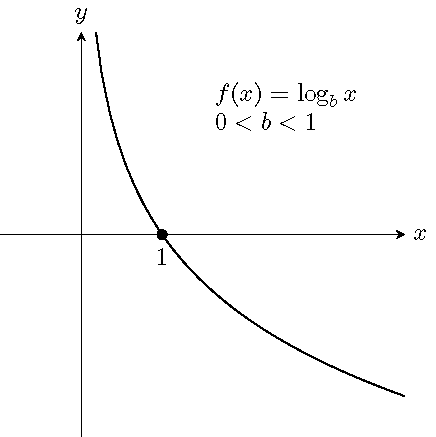

Topic 17 Logarithmic Functions
17.1 Estimate the Number of Digits
Can you estimate the number of digits in the integer part of the number \(2^{15}\times \sqrt{2020}\div 2021\)?
17.2 Definition and Graphs of Logarithmic Function
For \(x>0\), \(b>0\) and \(b\neq 1\), there is a unique number \(y\) satisfying the equation \(b^y=x\). We denote the unique number \(y\) by \(\log_bx\), read as logarithm to the base \(b\) of \(x\). In other words, the defining relation between exponentiation and logarithm is \[ y=\log_bx \quad\text{if and only if} \quad b^y=x. \] The function \(f(x)=\log_bx\) is called the logarithmic function \(f\) of \(x\) with the base \(b\).
Graphs of logarithmic functions:
 

17.3 Common Logarithms and Natural Logarithms
A logarithmic function \(f(x)\) with base 10 is called the common logarithmic function and denoted by \(f(x)=\log x\).
A logarithmic function \(f(x)\) with base the natural number \(e\) is called the natural logarithmic function and denoted by \(f(x)=\ln x\).
17.4 Basic Properties of Logarithms
When \(b>0\) and \(b\neq 1\), and \(x>0\), we have
- \(b^{\log_bx}=x\).
- \(\log_b(b^x)=x\).
- \(\log_bb=1\) and \(\log_b1=0\).
Example 17.1 Convert between exponential and logarithmic forms.
- \(\log x=\frac{1}{2}\)
- \(3^{2x-1}=5\)
Solution.
When converting between exponential and logarithmic forms, we move the base from one side to the other side, then add or drop the log sign.
- Move the base 10 to the right side and drop the log from the left: \[x=10^{\frac{1}{2}}\]
- Move the 3 to the right and add log the the right: \[2x-1=\log_35\]
Example 17.2 Evaluate the logarithms.
- \(\log_42\)
- \(10^{\log(\frac{1}{2})}\)
- \(\log_5(e^0)\)
Solution.
The key is to rewrite the log and the power so that they have the same base.
- \(\log_42= \log_44^{\frac{1}{2}}=\frac{1}{2}\).
- \(10^{\log\frac{1}{2}}=10^{\log_{10}\frac{1}{2}}=\frac12\)
- \(\log_5(e^0)=\log_51=0\)
Example 17.3 Find the domain of the function \(f(x)=\ln(2-3x)\).
Solution.
The function has a real output if \(2-3x>0\). Solving the inequality, we get \(x<\frac{2}{3}\). So the domain of the function is \((-\infty, \frac{2}{3})\).
17.5 Properties of Logarithms
For \(M>0\), \(N>0\), \(b>0\) and \(b\neq 1\), we have
- (The product rule) \(\log_b(MN)=\log_bM+\log_bN\)
- (The quotient rule) \(\log_b(\frac MN)=\log_bM-\log_bN\).
- (The power rule) \(\log_b(M^p)=p\log_bM\), where \(p\) is any real number.
- (The change-of-base property) \(\log_bM=\dfrac{\log_aM}{\log_ab}\), where \(a>0\) and \(a\neq 1\). In particular, \[ \log_bM=\dfrac{\log M}{\log b} \quad\text{and}\quad \log_bM=\dfrac{\ln M}{\ln b}. \]
Example 17.4 Expand and simplify the logarithm \(\log_2\left(\frac{8\sqrt{y}}{x^3}\right)\).
Solution.
\[ \begin{aligned} \log_2\left(\frac{8\sqrt{y}}{x^3}\right)&=\log_2(8\sqrt{y})-\log_2(x^3)\\ &=\log_28+\log_2(y^{\frac{1}{2}})-3\log_2x\\ &=3+\frac{1}{2}\log_2y-3\log_2x. \end{aligned} \]
Example 17.5 Write the expression \(2\ln(x-1)-\ln(x^2+1)\) as a single logarithm.
Solution.
\[ 2\ln(x-1)-\ln(x^2+1)=\ln((x-1)^2)-\ln(x^2+1)=\ln\left(\frac{(x-1)^2}{x^2+1}\right). \]
Example 17.6 Evaluate the logarithm \(\log_34\) and round it to the nearest tenth.
Solution.
On most scientific calculator, there are only the common logarithmic function LOG and the natural logarithmic function LN. To evaluate a logarithm based on a general number, we use the change-of-base property. In this case, the value of \(\log_34\) is \[\log_34=\frac{\log4}{\log3}\approx 1.3.\]
Example 17.7 Simplify the logarithmic expression \[ \log_2(x^{\log 3})\log_32. \]
Solution.
\[ \log_2(x^{\ln 3})\log_32 =(\ln 3\log_2x)\log_32=\ln3\left(\frac{\ln x}{\ln 2}\right)\left(\frac{\ln 2}{\ln 3}\right)=\ln x. \]
17.6 Practice
Problem 17.1 Write each equation into equivalent exponential form.
- \(\log_37=y\)
- \(3=\log_b64\)
- \(\log x=y\)
- \(\ln(x-1)=c\)
Problem 17.2 Write each equation into equivalent logarithmic form.
- \(7^x=10\)
- \(b^5=2\)
- \(e^{2y-1}=x\)
- \(10^x=c^2+1\)
Problem 17.3 Evaluate.
- \(\log_216\)
- \(\log_93\)
- \(\log 10\)
- \(\ln 1\)
Problem 17.4 Evaluate.
- \(e^{\ln 2}\)
- \(\log 10^{\frac13}\)
- \(\ln(\sqrt{e})\)
- \(\log_2(\frac12)\)
Problem 17.5 Find the domain of the function \(f(x)=\log(x-5)\). Write in interval notation.
Problem 17.6 Sketch the graph of each function and find its range.
- \(f(x)=\log_2x\)
- \(f(x)=\log_{\frac12} x\)
Problem 17.7 Expand the logarithm and simplify.
- \(\log(100x)\)
- \(\ln\left(\frac{10}{e^2}\right)\)
- \(\log_b(\sqrt[3]{x})\)
- \(\log_7(\frac{x^2\sqrt{y}}{z})\)
Problem 17.8 Expand the logarithm and simplify.
- \(\log_b\sqrt{\frac{x^2y}{5}}\)
- \(\ln(\sqrt[3]{(x^2+1)y^{-2}})\)
- \(\log(x\sqrt{10x}-\sqrt{10x})\)
Problem 17.9 Write as a single logarithm.
- \(\frac13\log x +\log y\)
- \(\frac12\ln(x^2+1)-2\ln x\)
- \(\frac13\log_2 x - 3\log_2(x+1)+1\)
Problem 17.10 Write as a single logarithm.
- \(2\log(2x+1)-\frac12\log x\)
- \(3\ln x - 5\ln y + \frac{1}{2}\ln z\)
- \(3\log_3 x-2\log_3(1-x)+\frac13\log_3 (x^2+1)\).
Problem 17.11 Evaluate the logarithm and round it to the nearest hundredth.
- \(\log_2 10\)
- \(\log_3 5\)
- \(\dfrac{1}{\log_52}\)
- \(\log_45-\log_29\)
Problem 17.12 Simplify the logarithmic expression \[ \frac{\log_3(x^2)\log_y\sqrt{3}}{\log x}. \]